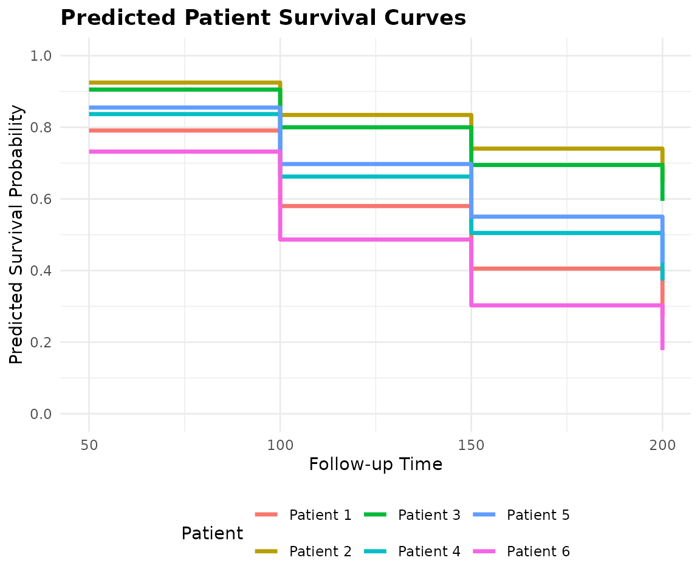

Introduction
The core feature of the SuperSurv package is its ability
to combine multiple base survival learners into a highly predictive
meta-ensemble. This tutorial walks through preparing data, defining a
library of models, fitting the Super Learner, and generating predictions
for new patients.
1. Load Data & Prepare Matrices
We will use the built-in metabric dataset, extracting
the covariates and performing a standard 80/20 train-test split.
library(SuperSurv)
library(survival)
# Load built-in METABRIC data
data("metabric", package = "SuperSurv")
# Quick 80/20 Train-Test split
set.seed(42)
n_total <- nrow(metabric)
train_idx <- sample(1:n_total, 0.8 * n_total)
train <- metabric[train_idx, ]
test <- metabric[-train_idx, ]
# Extract just the X covariates (assuming they are named x0, x1, etc.)
x_cols <- grep("^x", names(metabric), value = TRUE)
X_tr <- train[, x_cols]
X_te <- test[, x_cols]
# Define the prediction time grid (e.g., survival at 50, 100, 150, 200 months)
new.times <- c(50, 100, 150, 200)2. Define the Ensemble Library
We define a library of base survival models. For this quick demonstration, we use lightning-fast parametric and tree-based models.
my_library <- c("surv.coxph", "surv.weibull", "surv.rpart")3. Train the SuperSurv Metalearner
Before we run the main SuperSurv engine, it is important
to understand its key parameters. The Super Learner algorithm relies on
cross-validation to assign weights to the base models, and it must model
both the event and the censoring mechanism to avoid biased
evaluations.
Here is the complete guide to the arguments you need to pass:
The Data Inputs
-
time: A numeric vector of the observed follow-up times for your training cohort. -
event: A numeric vector indicating the status at the observed time (typically1= event occurred,0= right-censored). -
X: Adata.frameor matrix containing only the predictor variables (covariates) for the training set. Do not include the time or event columns here! -
newX: (Optional) Adata.frameof covariates for a validation or test set. If provided,SuperSurvwill immediately generate predictions for these patients during the training phase, saving you a step. -
new.times: A numeric vector defining the exact time points where you want survival probabilities predicted (e.g.,seq(50, 200, by = 25)).
The Model Libraries
-
event.SL.library: A character vector of the base algorithms used to predict the actual survival outcome (e.g.,"surv.coxph","surv.rpart"). -
cens.SL.library: The library used to estimate the censoring mechanism over time.SuperSurvuses these predictions to calculate Inverse Probability of Censoring Weights (IPCW). You can use the exact same library as your event models, or a simpler one.
The Meta-Learner & Tuning
-
metalearner: The optimization algorithm used to calculate the final ensemble weights.SuperSurvoffers two distinct approaches:-
"least_squares"(Default): Optimizes weights by minimizing the IPCW Brier score. Excellent for overall prediction accuracy. -
"nloglik": Optimizes weights by minimizing the negative log-likelihood. Excellent for improving hazard discrimination.
-
-
nFolds: The number of cross-validation folds used to train the meta-learner.V = 5orV = 10is standard. This cross-validation is what prevents the ensemble from overfitting to the base learners. -
control = list(saveFitLibrary = TRUE): This tells the engine to save the fitted base learners into the final object. This is required if you want to use thepredict()method on new patients later. -
verbose: Set toTRUEto print progress messages to the console. Highly recommended for large datasets or complex libraries so you can track the cross-validation progress.
Let’s fit two models with verbose = FALSE to see how the
meta-learner choice affects the final ensemble weights.
# Fit 1: Least Squares Meta-learner
fit_ls <- SuperSurv(
time = train$duration,
event = train$event,
X = X_tr,
newX = X_te, # Predict on the test set immediately
new.times = new.times, # Our evaluation time grid
event.SL.library = my_library,
cens.SL.library = my_library,
metalearner = "least_squares",
control = list(saveFitLibrary = TRUE),
verbose = T, # Turn to TRUE in practice to see progress!
selection = "ensemble",
nFolds = 5 # 5-fold CV for the meta-learner
)
# Fit 2: Negative Log-Likelihood Meta-learner
fit_nll <- SuperSurv(
time = train$duration,
event = train$event,
X = X_tr,
newX = X_te,
new.times = new.times,
event.SL.library = my_library,
cens.SL.library = my_library,
metalearner = "nloglik", # Swap to nloglik
control = list(saveFitLibrary = TRUE),
verbose = FALSE,
selection = "ensemble",
nFolds = 5
)4. Inspect the Ensemble Weights and Risks
The defining feature of the Super Learner is that it does not just pick the single “best” model; it finds the optimal weighted combination of all models based on their cross-validated performance.
Let’s inspect the weights (event.coef) and the
cross-validated risks (event.cvRisks) for both of our
meta-learners.
cat("\n--- LEAST SQUARES METALEARNER ---\n")
#>
#> --- LEAST SQUARES METALEARNER ---
print(round(fit_ls$event.coef, 4))
#> surv.coxph_screen.all surv.weibull_screen.all surv.rpart_screen.all
#> 0.2344 0.5906 0.1750
cat("CV Risks (Lower is Better):\n")
#> CV Risks (Lower is Better):
print(round(fit_ls$event.cvRisks, 4))
#> surv.coxph_screen.all surv.weibull_screen.all surv.rpart_screen.all
#> 0.4856 0.4854 0.4958
cat("\n--- NLOGLIK METALEARNER ---\n")
#>
#> --- NLOGLIK METALEARNER ---
print(round(fit_nll$event.coef, 4))
#> surv.coxph_screen.all surv.weibull_screen.all surv.rpart_screen.all
#> 0.000 0.684 0.316
cat("CV Risks (Lower is Better):\n")
#> CV Risks (Lower is Better):
print(round(fit_nll$event.cvRisks, 4))
#> surv.coxph_screen.all surv.weibull_screen.all surv.rpart_screen.all
#> 0.6554 0.6245 0.6521How to Interpret This:
-
event.coef: These are the final weights assigned to each base learner. A weight of0means the meta-learner completely dropped that model because it did not contribute to overall predictive accuracy. A high weight means that model heavily influences the final ensemble prediction. Notice how theleast_squaresandnloglikalgorithms might distribute these weights differently based on their optimization goals! -
event.cvRisks: This is the cross-validated error for each individual base learner. The meta-learner uses these errors to calculate the optimal weights. Lower risk always indicates better performance.
5. Generating Predictions on New Data
If you passed newX during the training phase,
SuperSurv already calculated the predictions for your test
set. However, in a real-world clinical setting, you will often train the
model once and then predict on brand new patients months later.
Because we set control = list(saveFitLibrary = TRUE)
during training, we can use the standard R predict()
method.
# Select 3 brand new patients from our test set
new_patients <- X_te[1:6, ]
# Generate predictions using the Least Squares ensemble
ensemble_preds <- predict(
object = fit_ls,
newdata = new_patients,
new.times = new.times
)
cat("\n--- PREDICTED SURVIVAL PROBABILITIES ---\n")
#>
#> --- PREDICTED SURVIVAL PROBABILITIES ---
final_matrix <- ensemble_preds$event.SL.predict
colnames(final_matrix) <- paste0("Time_", new.times)
rownames(final_matrix) <- paste0("Patient_", 1:6)
print(round(final_matrix, 4))
#> Time_50 Time_100 Time_150 Time_200
#> Patient_1 0.7910 0.5800 0.4053 0.2717
#> Patient_2 0.9249 0.8344 0.7404 0.6473
#> Patient_3 0.9054 0.8000 0.6948 0.5944
#> Patient_4 0.8369 0.6624 0.5048 0.3720
#> Patient_5 0.8552 0.6974 0.5504 0.4219
#> Patient_6 0.7321 0.4865 0.3026 0.1775Understanding the Output Matrix:
The predict() function returns a list, but the most
important element is event.SL.predict. * Rows
():
Represent individual patients. * Columns
():
Represent the specific time points we defined in new.times.
* Values: The estimated probability that the patient
will survive past that specific time point. As time increases
(moving left to right across a row), the survival probability naturally
decreases.
6. Visualizing Patient-Specific Predictions
While raw probability matrices () are perfect for downstream coding and performance benchmarking, they are difficult to interpret clinically. Doctors and researchers need to see the actual survival trajectories.
SuperSurv includes a built-in
plot_predict() function to effortlessly translate this
matrix into publication-ready survival curves for individual
patients.
# Plot the predicted survival curves for our 3 new patients (Rows 1, 2, and 3)
plot_predict(
preds = ensemble_preds,
eval_times = new.times,
patient_idx = 1:6
)
7. Next Steps
You now know how to prepare data, define a model library, choose a meta-learner, and generate patient-specific survival curves.
However, before deploying a model in clinical practice, you must rigorously prove that the ensemble actually outperforms the individual base learners. Head over to Tutorial 2: Model Performance & Benchmarking to learn how to generate time-dependent Brier Score, AUC, and Uno’s C-index plots!